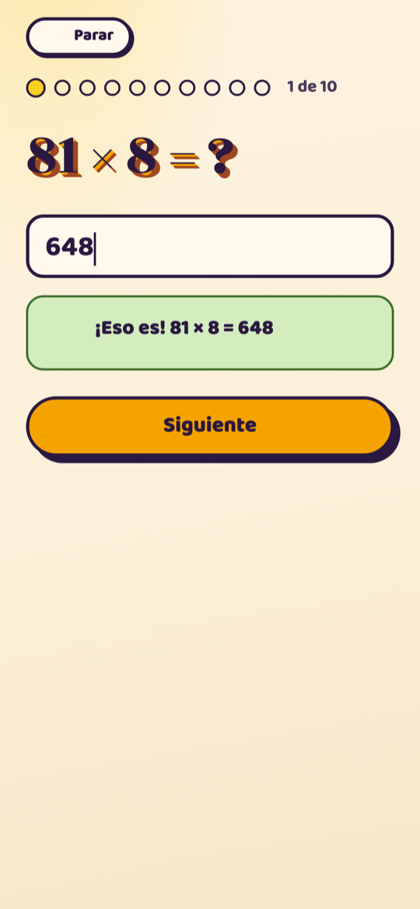
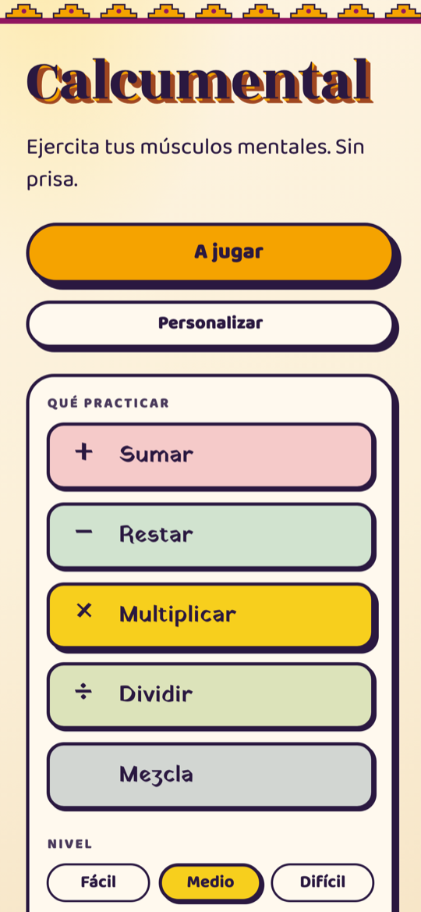
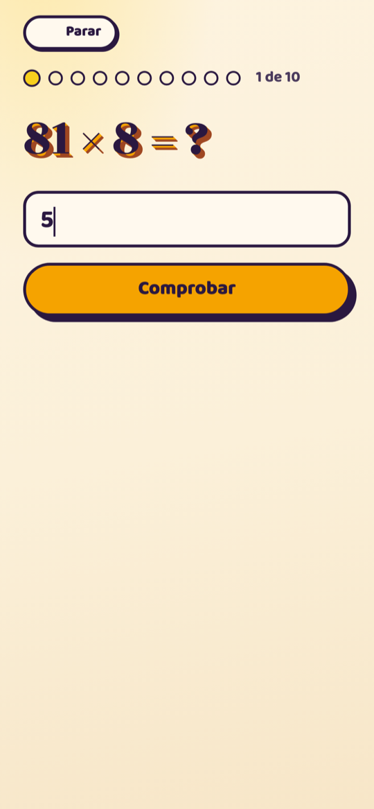
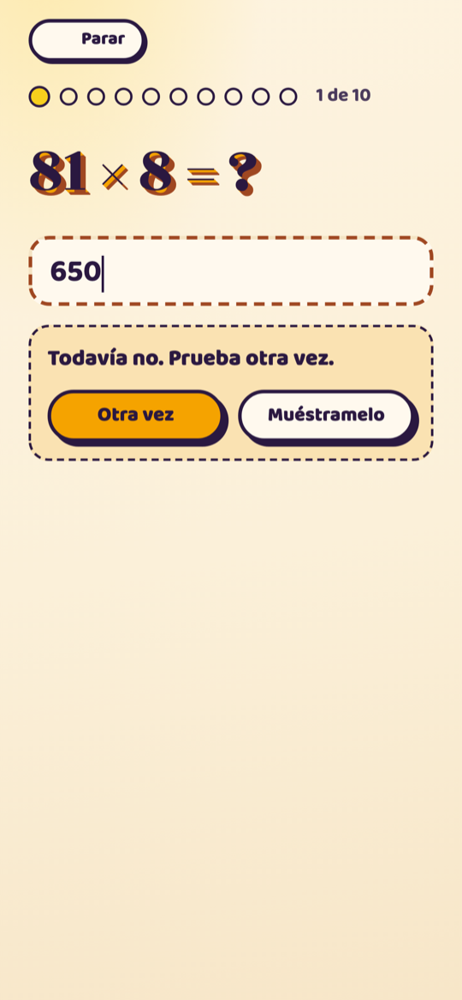
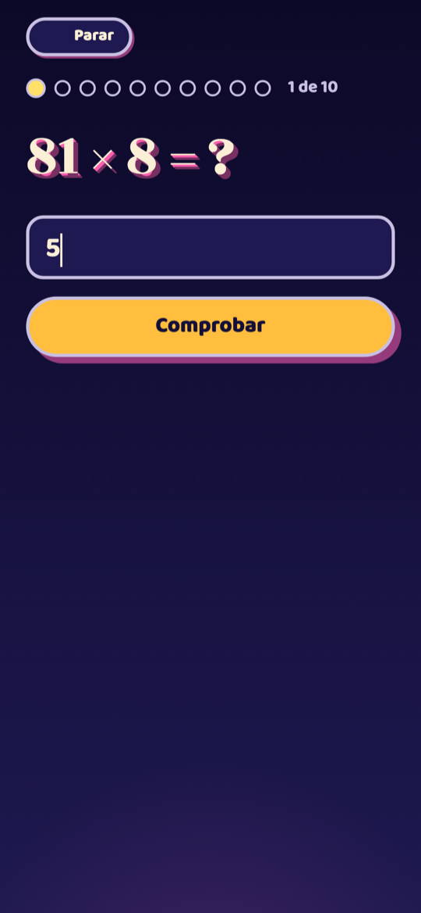

Por qué Calcumental
Calcumental se hizo para una niña en México a quien le encantaban los números y quería practicar más aritmética.
Así nació la idea de la app. Hace una pregunta a la vez, espera todo el tiempo que quieras y no juzga cómo te fue.
Ejercita tu mente.
Cuatro operaciones, tres niveles, tres idiomas. Practica donde sea, incluso sin conexión.
Gratis y de código abierto. En English, Español y हिन्दी.

Esta es una captura de pantalla de la app.
Pruébala de verdad en línea.
Calcumental se hizo para una niña en México a quien le encantaban los números y quería practicar más aritmética.
Así nació la idea de la app. Hace una pregunta a la vez, espera todo el tiempo que quieras y no juzga cómo te fue.
Cuatro operaciones, tres niveles y pequeños detalles que hacen más fácil el cálculo mental.
Suma, resta, multiplicación, división, o el modo mixto, que las combina todas.
De las tablas de un dígito a las sumas de tres dígitos. Practica justo lo que quieras.
Activa “más o menos” para practicar la estimación: cuenta una respuesta a menos del 5%.
Empieza a escribir otra respuesta de inmediato, pulsa Otra vez o elige Muéstramelo. No hay penalización.
Todo se ejecuta en tu dispositivo. Sin conexiones de red, sin analíticas, sin anuncios y sin cuentas.
Tranquila por diseño: sin rachas, puntajes, cronómetros ni marcas rojas. Conoce Ahimsa.
Hecha con el sistema de diseño Khelo: papel cálido, contornos de tinta, botones grandes y amables, y letras de bloque.




Pulsa A jugar, o Personalizar para elegir la operación, el nivel y cuántos problemas.
Escribe tu respuesta y pulsa Comprobar. Si todavía no es correcta, prueba otra vez.
Nada se mide ni se puntúa. Cuando termina la serie, ves lo que hiciste y puedes empezar otra.
Notas
No. No hay cuentas, ni analíticas, ni anuncios, y la app no hace conexiones de red. Solo recuerda tus elecciones (idioma, aspecto, qué practicar), en tu propio dispositivo. Lee la política de privacidad.
Calcumental es para practicar sin presión. Nunca te cronometra, te clasifica ni te compara, así que la única persona con la que trabajas eres tú.
Sí. Todo se ejecuta en tu dispositivo y no necesita conexión alguna.
Es una forma de practicar la estimación. En vez de exigir la respuesta exacta, cuenta cualquier valor a menos del 5% (nunca a menos de 1).
Sí, con la licencia AGPL-3.0-or-later. El código está en GitHub. Sus tipos de letra están bajo la SIL Open Font License.
Calcumental es gratuito y de código abierto, y Google Play pide a las cuentas de desarrollador personales nuevas una prueba cerrada con al menos 12 probadores durante 14 días antes de publicar una app. Es mucha carga y demasiado agotador para mí hacerlo con cada versión, así que la versión para Android es una descarga directa. Es la misma app, y el código está abierto para que cualquiera lo revise.
Verificar es opcional. Cualquiera de las dos comprobaciones muestra que el archivo es el que se publicó, y lo mejor es hacer ambas. Google explica cómo Android firma las apps (en inglés).
Comprueba el archivo
Calcumental.apk de la última versión.shasum -a 256 Calcumental.apk. En Windows, ejecuta certutil -hashfile Calcumental.apk SHA256.Comprueba quién la firmó
apksigner verify --print-certs Calcumental.apk.1778ce35141d6c39bb23285e2a4ee854586fd4a5f107bb589209f7bc750757b1.Si algo no coincide, no la instales.